Puedes completar este santuario desde que llegas a la región de la torre de Eldin. Se encuentra al este de la torre del bosque, en el centro de un lago de lava (Lago Gorobin). Lo más sencillo es que llegues planeando, aunque puedes atravesar el lago de lava usando las cajas metálicas que hay (colocándolas con el módulo imán).
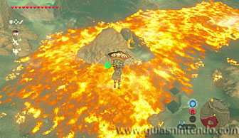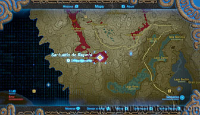
Una vez dentro verás unas grandes balanzas y en el otro extremo una puerta cerrada con llave. El altar se encuentra en la parte de arriba. Lo primero que debes hacer es quemar (o explotar con una flecha bomba) la caja que hay sobre una de las balanzas centrales.
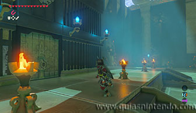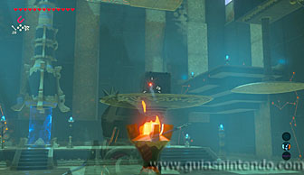
Así bajará la parte de la balanza que contiene un cofre junto a unos barriles. Abre el cofre para conseguir una llave. Con ella podrás abrir la puerta del fondo y sacar de dentro tres grandes bloques metálicos (usando el imán).
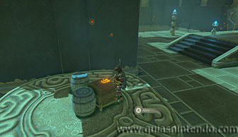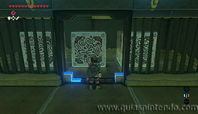
Ahora debes acercarte a la balanza que está en el lado izquierdo según entras al santuario, pegada a la pared. Coloca un bloque de metal sobre la bandeja más cercana a la entrada y otro bloque junto a las escaleras. Ahora podrás saltar desde las escaleras al bloque, y después a la bandeja donde has colocado el primer bloque metálico.
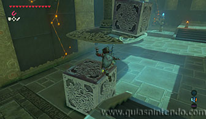
A continuación, coge el bloque que tienes a tu lado y llévatelo hasta la otra bandeja de la balanza, así conseguirás elevarte. De este modo puedes alcanzar la plataforma elevada que contiene un cofre. Ábrelo para conseguir un mandoble real.
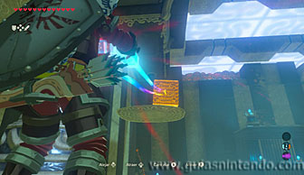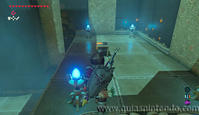
Baja y ve a la primera bandeja (donde abriste el cofre con la llave). Desde ella podrás romper los bloques agrietados que se ven más arriba. Puedes usar flechas bomba o bombas. A continuación, coloca uno de los grandes bloques metálicos en esta misma bandeja y déjalo ahí.
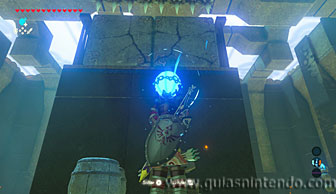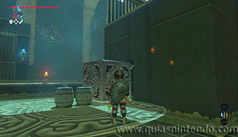
Ahora acerca los otros dos bloques metálicos y ponlos sobre la otra bandeja de la balanza. Al colocar el segundo debes estar sobre la primera bandeja. Así lograrás elevarte y llegar a la entrada del altar. El bloque que colocaste sobre la bandeja (y que se eleva junto a ti) evitará que los pinchos del techo de dañen.
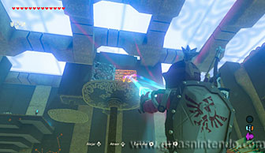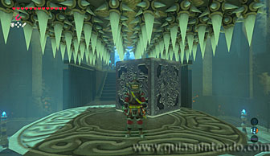
Ahora pasa por detrás de la caja metálica y alcanza el altar para conseguir tu símbolo de valía.
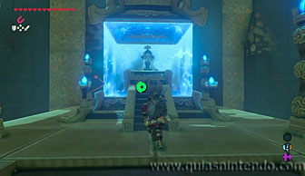